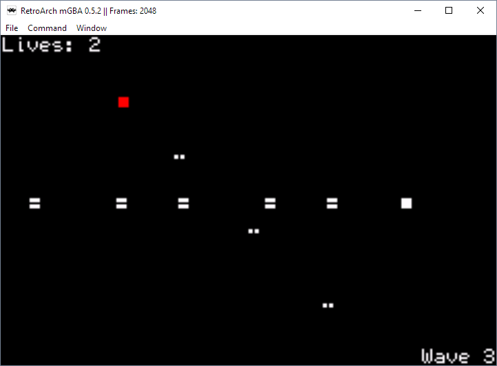
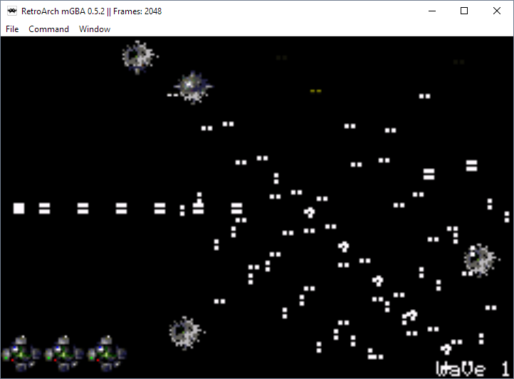

4-Way Shooter (mode 4)

Controls:
D-Pad: Move
B: Shoot
L: Rotate shooting direction counter-clockwise
R: Rotate shooting direction clockwise
Concept:
This project is designed to overcome the rendering speed limitations of mode 3 by sacrificing resolution. In mode 4, page flipping between two display buffers drastically increasing the amount of animation we can render smoothly. This game is an attempt at demonstrating this additional speed. Many enemies spawn each wave and shoot projectiles, causing large waves of bullets. Additionally, the player can shoot a rapidly moving stream of bullets in four directions to clear each wave. Although there are many bullets on screen, the enemy bullets move quite slowly compared to the player bullets. This allows the player to maneuver swiftly between the waves of projectiles without much trouble.
This project was also built upon with audio, sprites, and a state machine to get some practice before the tilemap modes. Also in this version, the rate of fire on the player bullets was increased, and an extra difficulty mode was added after beating the regular waves. These extra levels include a lot more enemies (and consequently, much bigger waves of bullets).
Credits:
Sprites: Tyrian
Other Images: Touhou
